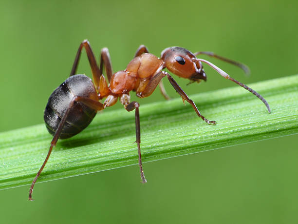
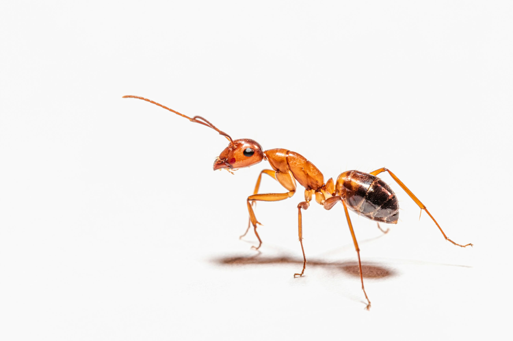

Ants are fascinating social insects that live in highly organized colonies. These colonies can range in size from a few dozen individuals to millions. They work together to find food, build their nests, and defend their community.
Within a single colony, you can find different types of ants, each with a specific job. There's the queen, who lays the eggs; the male ants, whose job is to mate with the queen; and the workers, who are all female and do everything from foraging for food to caring for the young.
